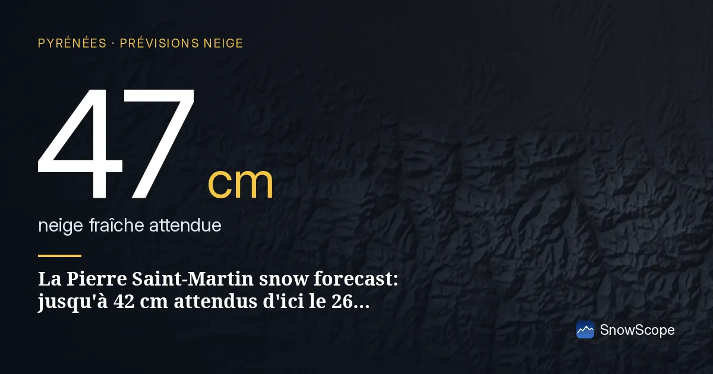
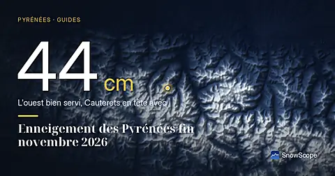
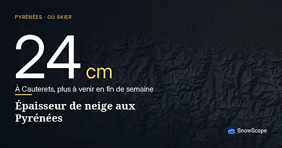
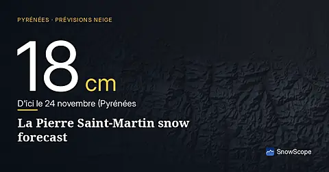
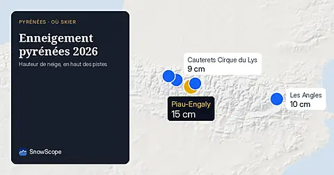
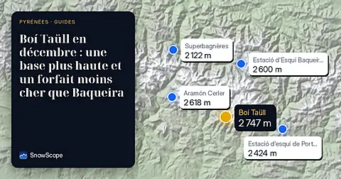

Bulletins neige · Pyrénées
Pyrénées: La Pierre Saint-Martin snow forecast – Le 24 novembre, l'isotherme 0 °C à Astun grimpe entre 1 960 m et 3 170 m, plus haut que le sommet …
La neige par pays aujourd'hui
Les pays les plus blancs aujourd'hui : Andorre (84 %), France (24 %) et Espagne (4 %).
Le plus de neige fraîche dans la semaine : Andorre (3 cm) et France (3 cm).
La neige aujourd'hui dans les grandes stations
- Gourette · 40 cm
- Candanchu · 39 cm
- Astun · 38 cm
- Formigal · 36 cm
- La Pierre Saint-Martin · 36 cm
- Gavarnie-Gèdre · 34 cm
- Les Angles · 31 cm
- Grand Tourmalet · 30 cm
- Luz-Ardiden · 30 cm
- Piau-Engaly · 28 cm
- Saint-Lary · 28 cm
- Canaro · 23 cm
- Estació d'Esquí Baqueira-Beret · 21 cm
- Ordino-Arcalis · 20 cm
- Aramón Cerler · 18 cm
- Ax 3 Domaines · 18 cm
- Boí Taüll · 18 cm
- Pal-Arinsal · 18 cm
- Font-Romeu Pyrénées 2000 · 16 cm
- Peyragudes · 16 cm
- Estació d'esquí de Port-Ainé · 15 cm
- Estació d'esquí Port del Comte · 14 cm
- GrandValira · 14 cm
- La Molina · 8 cm
La Pierre Saint-Martin snow forecast: jusqu'à 42 cm attendus d'ici le 26 novembre (Pyrénées)

La Pierre Saint-Martin snow forecast – Le 24 novembre, l'isotherme 0 °C à Astun grimpe entre 1 960 m et 3 170 m, plus haut que le sommet des remontées (2 272 m) : attendez-vous à de la pluie ou de la neige mouillée sur toutes les pentes. Entre aujourd'hui et le 26 novembre, nous attendons 47 cm à Astun, 47 cm à Cauterets Cirque du Lys et 45 cm à Formigal. Un mot sur les chiffres : les valeurs des stations de ski sont une estimation de SnowScope pour le haut du domaine, alors que chaque station de mesure mesure un seul point à la date indiquée. Sur le terrain, nous avons toujours une sonde ; ces chiffres disent où aller, la sonde dit ce qu'il y a sous les skis.
Ce qu'il y a au sol
Parmi les stations de ce bulletin, Cauterets Cirque du Lys a la neige la plus épaisse en altitude aujourd'hui, environ 20 cm, devant Astun 16 cm et La Pierre Saint-Martin 13 cm.
Aujourd'hui, 43 des 53 stations dans les Pyrénées ont de la neige sur le haut du domaine ; au total, SnowScope compte 2 480 km² sous la neige.

Piau-Engaly fin novembre 2026 : la neige du jour, la semaine qui vient, et ce que disent 46 hivers sur le 25 décembre dans la plus haute station des Pyrénées françaises.

Station par station, d'ouest en est : la neige du jour dans les Pyrénées françaises, espagnoles et andorranes, comparée à une fin novembre normale, et ce qu'il faut attendre pour décembre.


Cauterets Cirque du Lys domine les Pyrénées avec 24 cm au sommet le 22 novembre. Les chutes de neige prévues le 25 novembre pousseront la couverture de 44 à 51 stations.

Piau-Engaly se situe à 1 762 m avec des pistes jusqu'à 2 527 m. Sur 46 hivers passés, la profondeur habituelle au sommet est de 88 cm en bas, 123 cm à mi-pente et 159 cm au sommet.

Gavarnie-Gèdre domine les Pyrénées avec 26 cm en altitude le 22 novembre. La couverture neigeuse a triplé en deux jours dans la région.

Pluie au-dessus de 2 980 m à Gavarnie-Gèdre aujourd'hui, mais la neige revient dans quatre jours. Comment s'habiller et quoi apporter face aux conditions changeantes des Pyrénées.

La Pierre Saint-Martin reçoit 18 cm de neige fraîche dans les prochains jours. Les prévisions pour les Pyrénées à partir du 21 novembre montrent la majorité des chutes au-dessus de 1 900 m.


Des forfaits journée dans les Pyrénées à partir de 46 EUR : six stations en France, en Espagne et en Andorre comparées par prix, puis par l'enneigement qu'elles connaissent habituellement en décembre et en janvier.
La neige arrivera aux Pyrénées en deux vagues sur 14 jours, avec 91 cm prévus en altitude. La première semaine apporte 49 % du total ; la semaine 2 reste régulière. Données du 19 novembre.

La surface enneigée a bondi de 560 à 1 710 km² entre le 17 et le 19 novembre. Piau-Engaly conserve la plus grande épaisseur de neige avec 15 cm en altitude le 19 novembre.


Bulletin neige Pyrénées 15 novembre : pluie et neige mélangées à Cauterets, 7–19 cm sont tombés en 72 heures près du sommet. D'autres précipitations attendues d'ici le 18 novembre.

Pluie prévue alors que le niveau de congélation monte à 4 080 m ; la neige mesurée le 15 novembre est fine (moins de 20 cm) dans toutes les grandes stations des Pyrénées.

Boí Taüll commence à 2 039 m et bat Baqueira Beret sur le prix du forfait, bien que la neige de début décembre demande un peu de patience.

Cauterets propose 25 km de pistes pour 46 EUR, mais notre historique d'enneigement montre que la meilleure chance d'avoir de la neige est la dernière semaine de décembre.

Comparez Grandvalira et les stations espagnoles en décembre 2026 pour les hauteurs de neige, l'altitude des remontées et les prix à partir de 49,00 EUR.

Pour une semaine de ski en famille à petit budget à Astún-Candanchú en décembre, visez la fin du mois, quand les pistes supérieures ont une bonne neige dans 67 % des hivers passés.

Vous prévoyez un voyage en décembre à Baqueira Beret ? Consultez notre historique d'enneigement, les prix des forfaits à partir de 70,00 € pour une journée, et comparez avec Astún-Candanchú.

Grandvalira est souvent vendue comme une destination pas chère en décembre, pourtant la neige naturelle à la base n'atteint en moyenne que 9 cm lors des hivers passés.

Pluie et neige mélangées dans les Pyrénées le 14 novembre : Cauterets Cirque du Lys domine la région avec 13–20 cm en 72 heures, mais la pluie tombe sous 2 340 m.

Poudreuse fraîche dans trois stations des Pyrénées, neige mince partout, et journées chaudes qui risquent de former une croûte. Voici ce qu'il faut emporter et porter le 14 novembre.

Prévisions neige Pyrénées sur deux semaines : Gavarnie-Gèdre mène 6 stations avec 36 cm de neige nouvelle d'ici le 26 novembre. Données du 12 novembre.

Piau-Engaly le 12 novembre : niveau de congélation à 3 060 m apporte un risque de pluie malgré 16 cm de neige fraîche en 72 heures.

Bulletin neige dans les Pyrénées, 12 novembre. D'ici le 15 novembre, la prévision apporte 33 cm à Cauterets Cirque du Lys, 29 cm à Piau-Engaly et …

Trois hivers maigres d'affilée ont pris fin en 2025-26 ; cet automne a commencé normalement.

Piau-Engaly domine la prévision avec 37 cm de neige fraîche d'ici le 13 novembre ; 24 cm sont attendus le 12 novembre.

Grandvalira se situe dans la principale vallée d'Andorre. Accédez-y par route d'Espagne ou de France, avec des aéroports à 176–260 km et du parking gratuit dans certains secteurs.

Gourette et Cauterets côte à côte : altitudes, neige habituelle par mois, meilleures semaines et accès, d'après 46 hivers passés.

Baqueira-Beret est dans le Val d'Aran, côté atlantique des Pyrénées. Ce que cela change pour sa neige, vérifié sur 46 hivers passés face à La Molina, et quand y aller.

Moins de jours de neige aux 120 points étudiés dans les Pyrénées depuis 1980-81, surtout sous 1 500 m : notre série de 46 hivers et la recherche.

Notre prévision met l'isotherme 0 °C dans les Pyrénées entre 2 610 m et 3 840 m dans les jours à venir. Au moment le plus doux de la journée, la …

Comment réussir une journée à Luz-Ardiden, petit domaine au-dessus de Luz-Saint-Sauveur dans les Hautes-Pyrénées : la route, les deux secteurs, la neige de 46 hivers passés et les semaines à choisir.